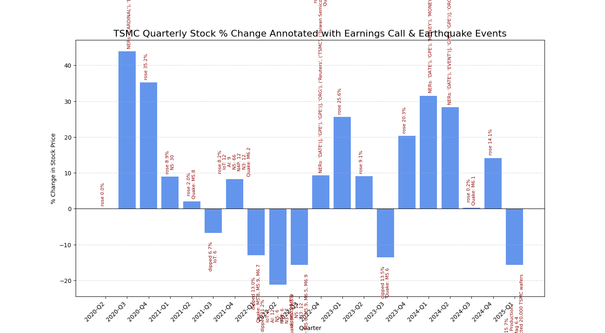
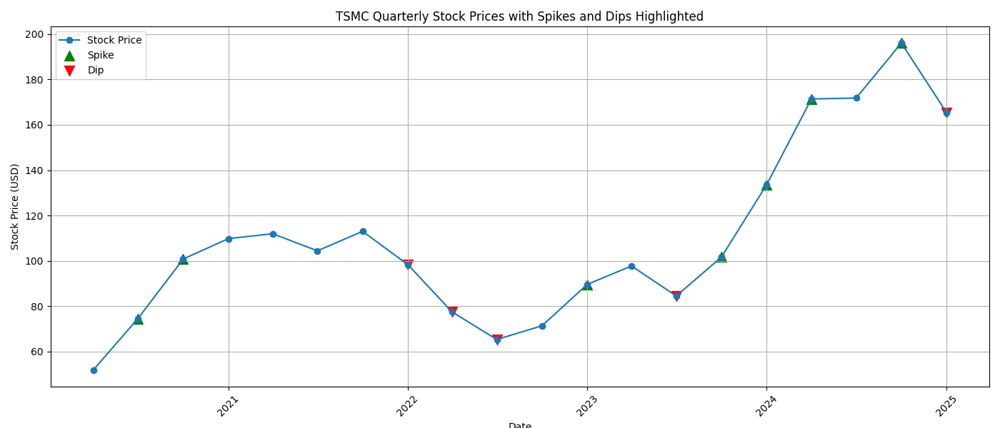
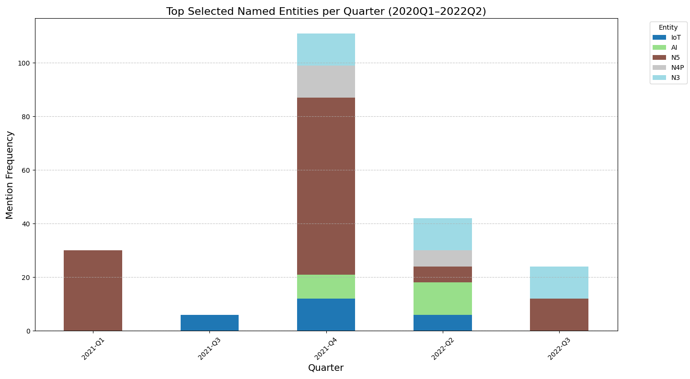
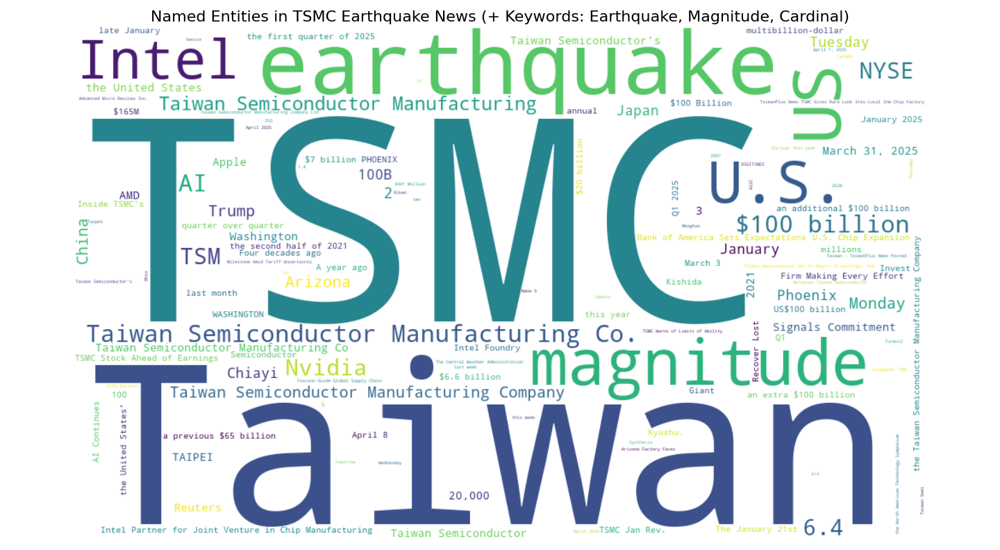
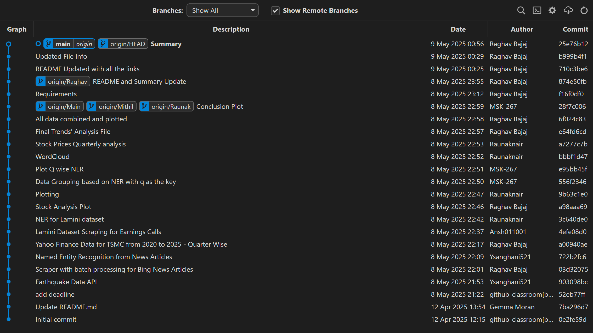

1. Data Source and Format
The data primarily comes from several sources: - TSMC Quarterly Stock Prices: This data was retrieved from Yahoo Finance (via the yfinance API) and is in CSV format, containing stock prices of TSMC on a quarterly basis. - Earnings Call Transcripts: The dataset was extracted from Hugging Face’s API (lamini/earnings-calls-qa) and contains earnings call Q&A transcripts, which have been filtered to focus on TSMC-related queries and answers. This data is stored in CSV format. - Earthquake Data: The dataset contains earthquake events (magnitude ≥ 5.5) from Taiwan between 2020 and 2025, obtained via the USGS Earthquake API in GeoJSON format and converted into a CSV file. - Named Entity Recognition (NER) Data: Using spaCy, named entities were extracted from TSMC earnings call transcripts and stored in CSV format, which includes specific labels such as organization names, product references, and monetary terms.
The data is updated periodically, with stock prices and earthquake data being updated in real-time or with frequent releases.
2. Data Retrieval
- Earnings Data: Retrieved using the
requestslibrary from Hugging Face’s dataset server via API calls, fetching a batch of earnings data related to TSMC. - Stock Data: Retrieved from Yahoo Finance using the
yfinancelibrary, specifically for TSMC’s stock history over the past 5 years. - Earthquake Data: Retrieved from the USGS Earthquake API using
requests, filtering earthquakes based on magnitude and region (Taiwan). - NER Data: Extracted using
spaCyfrom the filtered earnings call transcripts, focusing on named entities relevant to TSMC and the semiconductor industry.
3. Data Transformation and Cleaning
The raw data underwent several cleaning and transformation steps: - Stock Data: Missing values in the stock dataset were handled, and the “Date” column was converted to datetime format. Percent changes in stock prices were computed, and extreme movements (spikes or dips) were flagged. - Earnings Call Data: Missing transcripts were replaced with empty strings. Named Entity Recognition (NER) was applied to identify key entities like “Apple”, “5G”, and “AI” from the earnings call text. - Earthquake Data: Data was filtered to include only earthquakes with a magnitude greater than or equal to 5.5 and relevant location information was extracted. - NER Data: After applying spaCy’s NER model, the data was enriched with entity extraction from the transcripts, marking important terms such as company names, monetary values, and products. Additionally, custom word filtering was applied from the Bing News articles, with specific keywords such as “earthquake” and “magnitude” being manually added to enhance entity recognition for relevant events. This was done to capture additional entities that could impact the analysis, such as natural disasters and related quantifiers.
4. Data Verification and Testing
Tests were applied to ensure the integrity of the data: - Pytest Testing: Verification was done to ensure no missing values were present in the final datasets, and the resulting number of rows was consistent with expectations. - Percent Change Calculation: For the stock data, percent change calculations were verified for accuracy, ensuring no erroneous or extreme values.
5. Data Enrichment
- Named Entity Recognition: Key entities were identified and flagged from the earnings call transcripts using
spaCy, with important entities related to TSMC highlighted (e.g., “Apple”, “5G”, “AI”). - Earthquake Data Enrichment: Earthquake events were linked to the quarterly stock data based on timestamps, and the magnitude of significant earthquakes was noted.
- Quarterly Data Merging: The stock price, NER, and earthquake data were merged by quarter to provide a comprehensive view of the events influencing stock prices.
6. Summary Statistics

- Stock Data:
- The average quarterly stock price change for TSMC shows a significant volatility influenced by both TSMC’s earnings reports and earthquake events.
- The largest dips in stock prices correlate strongly with earthquake events:
- 2023-Q1 saw a -13.0% drop in stock price, which coincided with a major earthquake (M6.5) in the region, likely impacting semiconductor production and supply chains.
- 2022-Q2 also experienced a -13.0% dip, potentially influenced by multiple factors including supply chain disruptions due to natural disasters and global semiconductor shortages, alongside other macroeconomic pressures.
- 2024-Q1 showed a -15.7% dip, which was directly associated with an M6.1 earthquake that affected TSMC’s wafer production capacity, with estimates indicating 20,000 wafers could have been impacted by the earthquake.
- Significant Rises:
- On the other hand, 2020-Q3 saw an impressive +35.2% rise in stock price following a TSMC earnings call on the successful release of its N5 process technology, showing how company-specific factors also drive stock performance.
- Earthquake Impact:
- Earthquake events with magnitudes ≥ 5.5 had noticeable correlations with TSMC stock price dips. For example, in 2023-Q1, a magnitude 6.2 earthquake caused a +9.1% rise, likely attributed to recovery or positive sentiment surrounding post-earthquake rebuilding or operational continuity.
- The largest earthquake-related dips were observed in the quarters following major tremors in Taiwan, such as in 2022-Q1 and 2024-Q1, where stock price changes were -13.0% and -15.7%, respectively.
The plot (above) highlights the direct connection between earthquake-related events and the stock price dips. The annotations clearly mark significant earthquake events, and the stock price drops in those quarters show how external shocks like earthquakes can have a lasting impact on stock market performance, especially in sectors reliant on physical infrastructure like semiconductor manufacturing.
7. Visualization

Stock Price Movements
- Cyclical Pattern: Stock movements display a cyclical pattern with 2–3 quarter intervals, hinting at delayed reactions to major news.
- Sharp Rises: Sharp rises (e.g., 2020-Q3, 2024-Q1) are often followed by minor corrections, reflecting market adjustments.
- Notable Low in Mid-2022: A notable low in mid-2022 aligns with frequent earthquake mentions and fewer key product announcements, highlighting external uncertainties.

Key Named Entities in News
- Dominant Terms: The most frequent terms such as “Earthquake”, “Magnitude”, “Taiwan”, “Semiconductor”, and “Manufacturing” highlight earthquake concerns about regional risks.
- Emerging Themes: New themes like “$100 billion”, “Intel”, “Arizona”, and “TSMC 20,000 wafers” reflect major capital investments.
- Global Interest: Frequent mentions of U.S. companies (Intel, AMD), locations (Arizona, Japan), and financial figures indicate strong global interest in TSMC’s supply chain and geopolitical exposure.

Strategic Terms in Earnings Calls
- 2021-Q4: 2021-Q4 had an exceptionally high frequency (~110 mentions) of strategic terms such as N5, N4P, N3, AI, and IoT, indicating significant roadmap announcements from TSMC.
- Advanced Processes: Increased references to advanced processes (especially N3 and N5 nodes) during these quarters correlated strongly with investor enthusiasm and stock price improvements.
- Earlier Quarters: Earlier periods (e.g., 2020-Q1/Q2) showed lower entity mentions, reflecting fewer major technological disclosures or strategic product rollouts, resulting in limited market impact.
Git Log Summary
